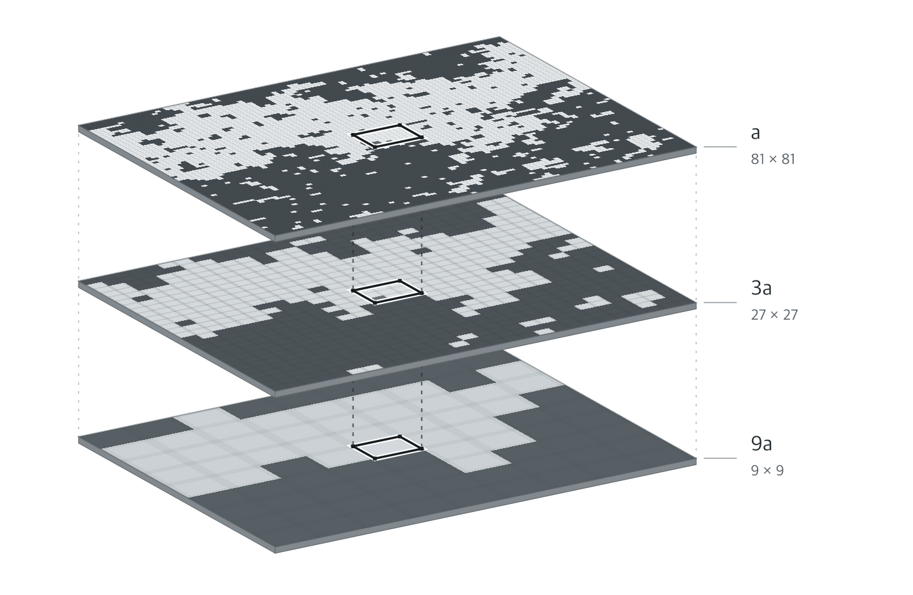
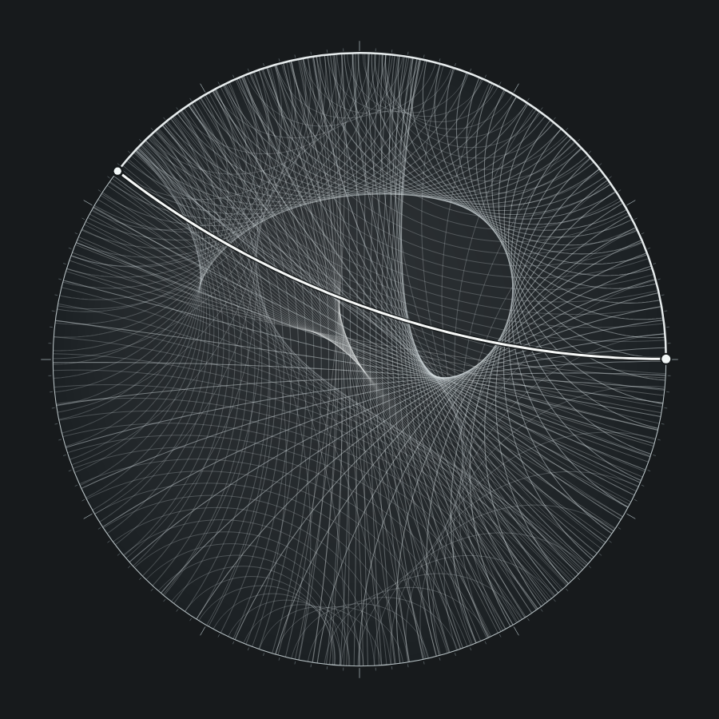

I studyquantum
matter.
I work in condensed matter theory, mostly on conformal field theory, quantum foundations, and topology.
More about me
One lattice, three scales
Point or tap to trace a block.
Majority at 9a

AdS₃ / CFT₂
Boundary threads
One endpoint stays fixed. Move the other around the boundary and watch the geodesic it draws through the disk.
Move along the rim, or slide to change the angle.
Behind the drawing
This is a constant-time slice of pure AdS₃. The silver threads are a family of geodesics. In the vacuum CFT₂ on a circle, the regulated length of the highlighted geodesic gives the interval’s leading holographic entanglement entropy after division by 4G₃, in units with ℏ = 1.
Ryu & Takayanagi (2006) ↗